Как читать авторский курс и нормативные материалы
Это учебные материалы, а не заключение о соответствии конкретного продукта. Организационные модели курса отделяйте от терминов стандарта: ППК в опубликованном проекте — машиночитаемый перечень, а живой реестр его версий является практикой сопровождения. Термин OSA в разных материалах имеет разный охват. Статус и обязательность нормативного документа проверяются отдельно; проект КАПО опубликован как проект первой редакции.
Конспект: идентификаторы компонентов и уязвимостей
Зачем модуль
Сканер уязвимостей не анализирует код компонента — он соединяет две таблицы по ключу. С одной стороны лежит ваш компонент с координатой (PURL или CPE), с другой — записи об уязвимостях, привязанные к таким же координатам. Совпали ключи — появилась находка; не совпали — её нет. Поэтому качество SCA определяется не «мощностью» движка, а точностью координат на входе. Самый коварный результат — не ложная тревога (её видно и можно снять), а молчаливый пропуск: компонент уязвим, но без корректного PURL/CPE он просто не попал в join и в отчёте отсутствует. Отчёт «0 уязвимостей» при этом выглядит как хорошая новость.
Ключевые идеи
Два мира матчинга. Экосистемные сканеры (OSV-Scanner, Grype, Trivy в режиме осведомлённости об экосистеме) матчат по PURL — пакет в пределах своей экосистемы и диапазон затронутых версий. NVD матчит по CPE — vendor:product:version. Это разные системы координат, и компонент должен иметь правильную координату для каждого мира, иначе соответствующий источник его «не увидит».
PURL — координата экосистемы. Грамматика: pkg:type/namespace/name@version?qualifiers#subpath. Примеры:
- pkg:npm/lodash@4.17.21
- pkg:pypi/django@4.2.1
- pkg:maven/org.apache.logging.log4j/log4j-core@2.14.1
- pkg:golang/github.com/gorilla/mux@v1.8.0
- pkg:deb/debian/curl@7.74.0-1.3?arch=amd64
PURL хорош тем, что у пакетных экосистем уже есть канонические имена — для npm/PyPI/Maven координата вычисляется почти однозначно.
CPE — координата словаря NVD. Формата 2.3 это строка ровно из 13 полей: cpe:2.3:part:vendor:product:version:update:edition:language:sw_edition:target_sw:target_hw:other, где part ∈ {a, o, h}, пустое поле = *. Пример: cpe:2.3:a:openssl:openssl:3.0.7:*:*:*:*:*:*:*. CPE назначается централизованно, словарём NVD, и здесь начинаются расхождения имён.
Идентификаторы уязвимостей — тоже координаты, и их несколько. CVE-2021-44228 (MITRE/NVD), GHSA-jfh8-c2jp-5v3q (GitHub Advisory). OSV (osv.dev) — это и схема, и агрегатор: его записи имеют экосистемные префиксы (PYSEC-…, RUSTSEC-…, GO-…) либо переиспользуют GHSA-…, а поле aliases связывает эквивалентные записи между собой. БДУ ФСТЭК — национальный источник с идентификаторами вида BDU:2021-05541; часть записей БДУ вообще не имеет CVE (специфика РФ), а сроки публикации могут опережать или отставать от NVD. Поэтому БДУ — отдельная координатная система, а не перевод NVD.
Alias-проблема CPE Один и тот же продукт в словаре NVD может жить под разными vendor. Для curl исторически существуют записи и под
cpe:2.3:a:haxx:curl:..., и подcpe:2.3:a:curl:curl:.... Если ваш SBOM использует один vendor, а часть CVE привязана к другому, эти CVE в join не попадут. Сверять CPE по словарю NVD — отдельная ручная работа (П25. CPE alias worklist).
Как выглядит на практике
Возьмём log4j — все координаты публичны и проверяемы:
| Координата | Значение |
|---|---|
| PURL | pkg:maven/org.apache.logging.log4j/log4j-core@2.14.1 |
| CPE 2.3 | cpe:2.3:a:apache:log4j:2.14.1:*:*:*:*:*:*:* |
| CVE | CVE-2021-44228 |
| GHSA | GHSA-jfh8-c2jp-5v3q |
Обратите внимание на расхождение: в Maven компонент — org.apache.logging.log4j / log4j-core, в CPE — vendor apache, product log4j. Это не опечатка, это два независимых именования одного артефакта. Именно поэтому связку PURL↔CPE нельзя выводить простым склеиванием строк — она требует нормализации и проверки по словарю.

Слепые зоны именно этой темы
- Битый PURL = тихий ноль. Лишний приватный qualifier (
?repository_url=...,?user=...) или экзотическийtypeуводит компонент мимо публичной базы — находок ноль, ошибки нет. Чистить приватные qualifiers перед матчингом — задача П24. PURL нормализация и private qualifiers. - C/C++ без CPE. У C/C++ часто нет нативного пакетного менеджера, значит нет естественного PURL. Компонент опирается на CPE, а CPE надо проставить вручную — и тут максимально бьёт alias-проблема. См. М09.
- Диапазоны версий, а не точные. Уязвимость почти всегда описана диапазоном версий. Если у компонента версия не нормализована (
v1.2.0против1.2.0, эпохи в deb), попадание в диапазон ломается. - Не путать identity и severity. Этот модуль — про то, нашли ли мы уязвимость вообще. Приоритизация (EPSS, KEV, CVSS) — это уже М06.
Связь с нормативкой
- NIST SP 800-218 SSDF RV.1 — непрерывный поиск уязвимостей в компонентах опирается на корректную идентификацию компонента.
- CISA Minimum Elements for SBOM — уникальные идентификаторы как обязательный элемент SBOM.
- BSI TR-03183-2 v2.1.0 — критерии качества SBOM, включая полноту и корректность идентификаторов.
- БДУ ФСТЭК — национальный источник уязвимостей и требования к его учёту.
Что уносим в работу
- На каждый значимый компонент должны быть обе координаты — PURL и CPE; для C/C++ CPE проставляется и сверяется вручную (П25. CPE alias worklist).
- Перед матчингом PURL нормализуем и снимаем приватные qualifiers (П24. PURL нормализация и private qualifiers).
- «0 уязвимостей» трактуем как гипотезу, а не вывод: проверяем, что компоненты вообще попали в join (есть ли у них координаты).
- CPE сверяем по словарю NVD на alias (vendor может быть не один).
- БДУ ФСТЭК подключаем как самостоятельный источник, не ожидая полного совпадения с NVD по идентификаторам.